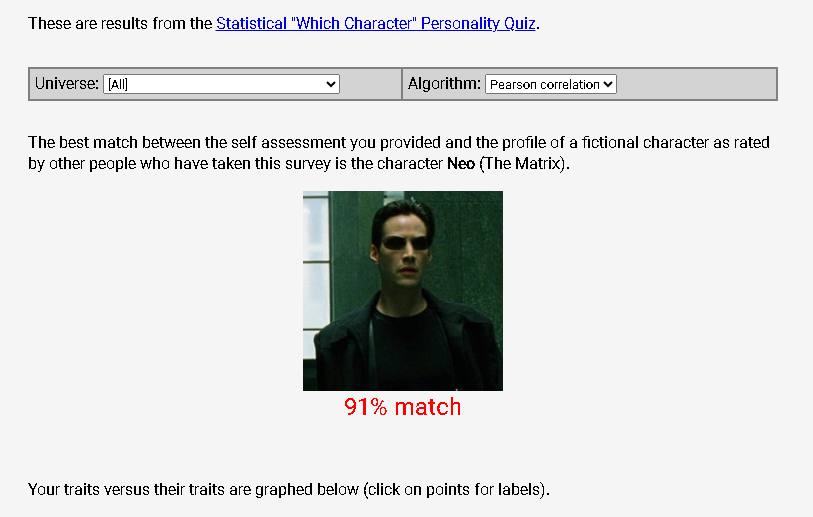
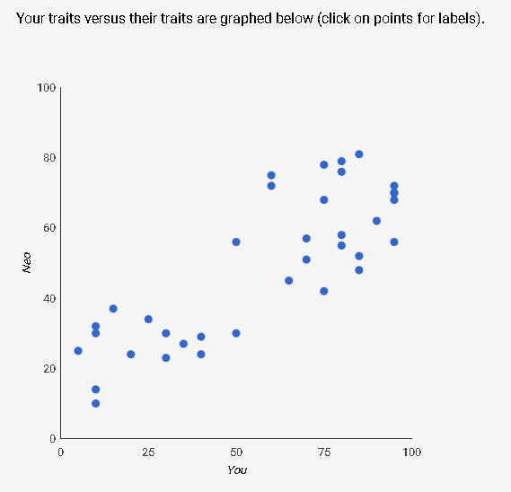
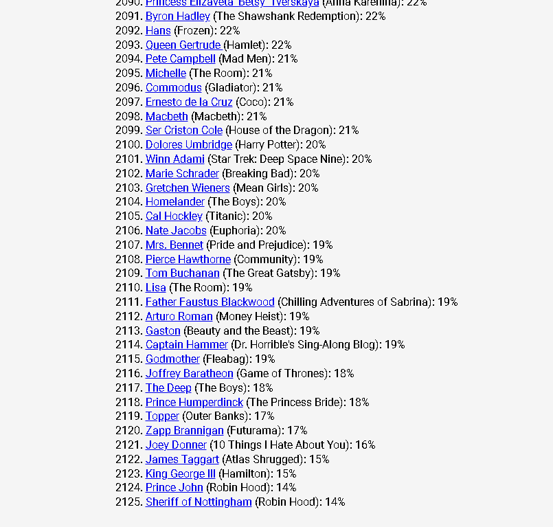
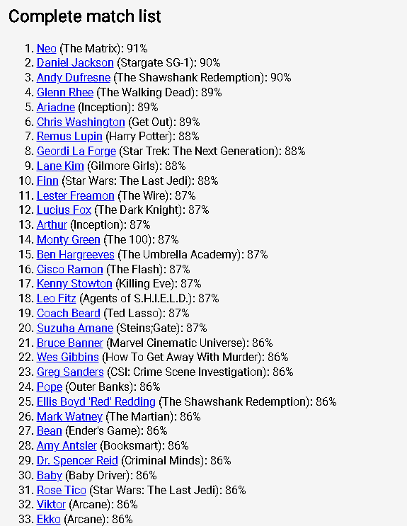
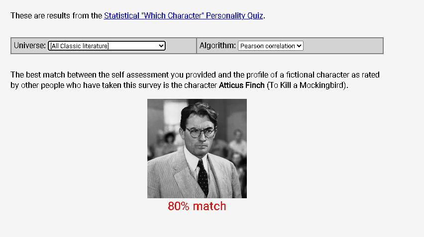

Which Fictional Character Am I? (also one month complete yay!)
02:35AM 2 August 2025
Welcome to the 5th installment of this newsletter where I share just some.. things. It's now been a whole month since I started this which is pretty cool but a little weird I haven't thought of a name for it yet. This week I found out why we wear ties, nodded heavily to a video by Adam Neely I think you'll enjoy and really overthunk this quirky little test. Boring stuff I know but these weeks exist too!
The Things:
- So surprisingly the reason we wear ties from what I gathered is well, It's a class thing! It's somehow symbolic of the fact that you are not working in anything with manual labour because if you were the tie would get in the way. It's purpose is that it does not serve a purpose. It's Fashion.
- Found out about this cool website called Pairdrop, if you have something on a computer which not yours, and you want it on your phone without any hassle, this is the website for you.
- I really enjoyed this video by Adam Neely this week about "Suno, AI Music, and the Bad Future"
- Here's a nice little phrase that I heard from Jocko Willink today "Get out of your head and into your body." He really has the most practical advice on the internet right now, understandably so because he was the US Navy SEALs afterall.
- And since we are taking some kind of test every week, I took this Statistical "Which Character" Personality Quiz and apparently I have a 91% match with Neo (The Matrix), which is just so cool!!! And an 80% match with Atticus from To Kill a Mockingbird which I am reading right now. Here's my full result and you can take your own here.





- Finally... All you need is love. I'll leave it at that.
I've been watching these people on Instagram doing these challenges where they learn about a random topic and speak about it for a minute or so, I wanna do that too and maybe I will soon. Besides that I really need to go running by the docks early morning just like that scene in Rocky. Also I'm definitely buying a good guitar soon. But that's all I have for this week, big plans though man, big plans. I'll see you next week.
← Back to the homepage